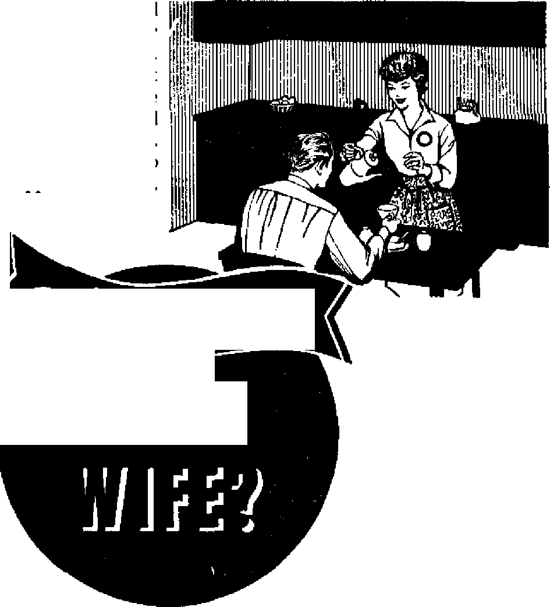
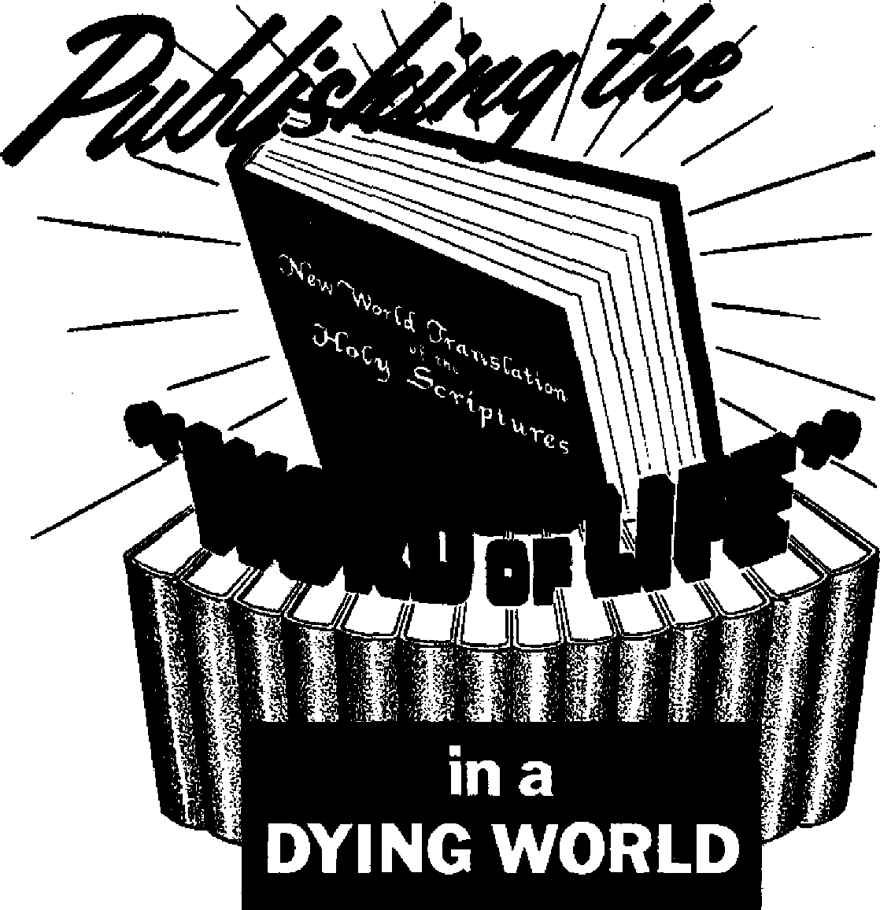

The Problem of the Trinity
The Problem of the Trinity
Religious Intolerance Flares Up in Mexico
Are You a Good Wife?
PAGE IO

History’s Happy Accidents
DECEMBER 8, 1963
THE MISSION OF THIS JOURNAL
News sources that are able to keep you awake to the vital Issues of our times must be unfettered by censorship and selfish interests, '‘Awake!" has no fetters. It recognizes facts, faces facts, is free to publish facto. It is not bound by political ambitions or obligations; it is unhampered by advertisers whose toes must not be trodden on; it is unprejudiced by traditional creeds. This journal keeps itself free that It may speak freely to you. But it does not abuse its freedom. It maintains integrity to truth.
"Awake!” uses the regular news channels, but is not dependent on them. Its own correspondents are on all continents, In scores of nations. From the four corners of the earth their uncensored, on-the-scenes reports come to you through these columns. This journal's viewpoint is not narrow, but is international. It Is read in many nations, in many languages, by persons of all ages. Through its pages many fields of knowledge pass in review—government, commerce, religion, history, geography, science, social conditions, natural wonders—why, its coverage is as broad as the earth and as high as the heavens.
“Awake!" pledges itself to righteous principles, to exposing hidden foes and subtle dangers, to championing freedom for all, to comforting mourners and strengthening those disheartened by the failures of o delinquent world, reflecting sure hope for the establishment of a righteous New World.
Get acquainted with "Awake!" Keep awake by reading "Awake!”
m in ■ » m—
•- Published Semimonthly by
WATCHTOWER BIBLE AND TRACT SOCIETY OP NEW YORK, INC. 117 Adams Street Brooklyn, N.Y. 11201, U.S.A.
N. H. Knokb, President Grant Suiter, Secretary
Printing this f*aue: 3,800,000
“Await!” b pabllihad In the fflllwlwp 25 laniuagit: Semimonthly—Aftlkttns, Clnjujs, Dmlah, Dutch, English, Finnish, French, Gvrroan, Greek, Italian, Japanese. Korean, Norwegian, Ptulufium, Spanish, Swedish, Tagalog, Zulu, Monthly—Obu-Vlaayan, Chinese, Ilocanu, Malayalam, t’ollsh, Tamil, Ukrainian,
. Yearly subscription rates
Mto for Muiimontlily editions
Canada, 150 Brltlgeiand Are,. Toronto 19, Ont $1 England, Watch Tower House,
New Zealand, 621 New North Rd, Auckland, &W. 1
Swth Africa, Private Bag 3, P.O. Elanftfonteln, Tri, 70c Monthly editions coat hall the above rates.
Five cents a copy
RMlttaMH for subscriptions should be sent to ttw offlrt in your country. Otherwise send your remittance to Brooklyn. Not Jee of explrgtltn is sent at least two isBuce before wbwTlptlon expires.
CHANGES OF ADDRESS should re»h ■> thirty diyi before yuir moving data. Give nt year old and Mew addreu (if pnilble, ynnr old address label>. Write Watchtower, 117 Adami Street, Brooklyn, New York 11201, U.S.A.
Secund-class postage paid at Brooklyn, N.Y. Printed la U.S.A.
The Bible translation t**d l« “Awake!” la the Mew World Troiilrtln of the H*ly Sarlpfirm, 1961 edition. When wthw Irvulationi an aied the following syrrholt will appear Behind the eilatlom:
AS — American Standard Verdon AT - An American Translation AV — Authorized Version (16111 Do - J. N. Darty's version
Dy ■“ Catholic Douay vereloo ED - The Emiihatic Dlaglott JP — Jewish Publication Hoc. Le - Isaac Lreser’s version
Mo - Janies Moffatt’s. Tendon Ro - J. B. neither ham's version RS — RrrlBEd Standard Veralon Y& - Hubert Young's version
I ■ IM » IM |M »—!■ ■ ■ V'
CONTENTS
Religious Intolerance Flares Up
Mahogany—the Wood for
Fascinating Hobby of Rock Collecting
Putting Past-dated Magazines to Use
"Your Word Is Truth"
Samson—A Faithful Servant or an
Volume XLIV

Brooklyn, N. Y., December B, 1963
Number 23
ON WHOM are you working? Whom are you trying to improve? Yourself or the other fellow? It is one of the quirks of human nature to note the mistakes and shortcomings of another but to be blind to one’s own.
There are some persons who seem to have telescopic and microscopic vision when it comes to the faults of others but who seem to be abysmally blind to their own shortcomings. Do you have such a tendency? Or, more grievously still, have you, perhaps unconsciously, assigned to yourself the task of correcting the faults of another? For example, there is the wife who in the presence of others keeps after her husband because of slight slips of speech, dress or eating habits, yet is wholly blind to her more glaring faults of lack of tact and criticism of her husband in public. How foolish she is!
Suppose another’s frailties do annoy you. Is that a valid reason for you to try to make that one over or force him to get rid of such traits? Perhaps you have weaknesses that annoy him even more. To ‘meddle with what does not concern* one is condemned in the Scriptures as “walking disorderly,’* Concerning such a course we are admonished, “Let none of you suffer as ... a busybody in other people’s matters.”—2 Thess. 3:11; 1 Pet. 4:15.
This does not mean that one must condone religious falsehood or immoral practices or that parents are not to discipline their children. Not at all. But it does mean that something is wrong with the thinking of one who constantly harps on the minor failings of his fellowman.
Jesus Christ, by means of a hyperbole, strongly condemned those who are prone to work on the faults of others while ignoring their own: “Stop judging that you may not be judged; for with what judgment you are judging, you will be judged; and with the measure that you are measuring out, they will measure out to you. Why, then, do you look at the straw in your brother's eye, but do not consider the rafter in your own eye? Or how can you say to your brother, ‘Allow me to extract the straw from your eye’; when, look! a rafter is in your own eye? Hypocrite! First extract the rafter from your own eye, and then you will see clearly how to extract the straw from your brother’s eye.”—Matt. 7:1-5.
To work on the other’s faults while ignoring your own flies in the face of the righteous rule to do to others as you would have them do to you. More than that, it does not make sense- Why set yourself up as judge as to the degree of willfulness or carelessness represented by another’s shortcomings? Most fitting in this regard is the reproof of the apostle Paul: “Who are you to judge the house servant of another? To his own master he stands or falls. Indeed, he will be made to stand” —in spite of the weaknesses that may annoy you—“for Jehovah can make him stand.”—Rom. 14:4.
Then, again, for you to take another’s failings so seriously as to keep dwelling on them in your mind, or so as to harp on them, trying to pressure that one so as to get rid of them, is most unloving. Instead of dwelling on, harping on, or advertising the faults of others, love does just the opposite: “Love covers a multitude of sins.” Yes, “love covers over even all transgressions.”—1 Pet. 4:8; Prov. 10:12.
The one to work on is yourself. That is the one you are in position to know the best, the one on whom you have the most opportunity to work; in fact, the one on whom you are obligated by God to work! His Word, the Bible, is filled with counsel for you to do just that. To mention some: “Quit being fashioned after this system of things, but be transformed by making your mind over, that you may prove to yourselves the good and acceptable and perfect will of God.” “Keep testing whether you are in the faith, keep proving what you yourselves are.”—Rom. 12:2; 2 Cor, 13:5.
And Bible writers such as the apostle Paul practiced what they preached. As busy as he was preaching to others he did not neglect or overlook the need of working on himself: “I browbeat my body and lead it as a slave, that, after I have preached to others, I myself should not become disapproved somehow.”—1 Cor. 9:27.
All such "training yourself with godly devotion as your aim ... is beneficial for all things, as it holds promise of the life now and that which is to come.” Those are among the more important reasons for you to be working on yourself.—1 Tim. 4:7, 8.
But there are also worthwhile though lesser benefits that come from working on yourself instead of on the other fellow. For one thing, it is much easier on your disposition, for, as a rule, you will be less irritated, annoyed, exasperated and frustrated at failing to get results if the one you are working on is yourself.
More than that, to the extent that you make progress in overcoming your weaknesses to that extent you will find yourself easier to get along with. You will also find others easier to get along with, and others will find it easier and more pleasurable to get along with you. Further, it will tend to make you more charitable about the failings of others if you keep on working hard at overcoming your own. It will make you humble, and humility is a fine though rare quality to possess. Remember, “God opposes the haughty ones, but he gives undeserved kindness to the humble ones.” —Jas. 4:6.
So, instead of noting the annoying weaknesses or mistakes of another and attempting to work on him, why not make it a point to note his good qualities and the fine things he has done? When you call to mind the faithful servants of God mentioned in his Word, you remember them for their fine qualities and the good things they have done, and you love them for these, do you not? So do likewise with those with whom you associate in your home, your place of employment or in your Christian congregation. Be wise! Note their good qualities, their fine deeds; and as for shortcomings and mistakes, keep working on your own!

INITY
WHEN you say the word “Trinity” most persons know what you mean —the religious doctrine that the Father, the Son and the Holy Spirit are entirely equal and compose just one God.
This is the doctrine that prompts people to say: “When God came to earth,” or to call Mary “the Mother of God.”
Thousands of pages and perhaps tons of ink have been used to explain how the Father, the Son and the holy spirit could be “equal in all things, because each one is God, and they are but one and the same God.”1 Yet a religious authority adds: “No more than the child, the theologian does not understand this mystery.”3
Is this “mystery” worthy of discussion?
Indeed it is, for if we worship a trinity and that doctrine is false, our worship is vain, since it is not directed toward the true God. If God is One, and if in the face of the evidence we hold to a doctrine that says he is made up of three, we could not expect our worship to be accepted by him, since he said: “To no one else shall I give my own glory.”—Isa. 42:8.
Is there any question about whether this doctrine is true?
Indeed there is, for rather than saying that the three are “**ne, perfectly one, perfectly simple,’f:! as do people who teach the Trinity doctrine, Jesus himself said he was not identical with his Father. Jesus himself was very specific in showing that he and his Father were separate when he said: “ 'The witness of two men is true? I am one that bears witness about myself, and the Father who sent me bears witness
about me.”—John 8:17,18.
Not Used in
Holy Scripture
Those words may sound quite strange to you, but the fact is that Jesus did not teach the doctrine of the Trinity, and his disciples did not imagine that he was equal with his Father. Thus The Catholic Encyclopedia admits that “in Scripture there is yet no single term by which the Three Divine Persons are denoted together.”4 Louis Reau, professor of medieval art at the Sorbonne, France’s leading university, says: “The dogma of the trinity is of relatively recent date. There is no reference to it in the Old Testament.” He adds: “One can even say that it is a conception foreign to primitive Christianity.”5
The Catholic Encyclopedia further says that the Greek word for “trinity” is first found, not in the days of Jesus’ Greekspeaking apostles and disciples, who had heard from Jesus about God, but “in Theophilus of Antioch about A.D. ISO.”6
It continues: “Shortly afterwards it appears in its Latin form of trinitas in Ter-tullian. ... In the next century the word is in general use.” Do you find it amazing that not until the third century did this word come into general use? This was long after Christ's death, and in an epoch In which many false doctrines were finding their way into a “Christianity” that was becoming more and more paganized.
Theologians recognize this astounding lack of any reference to the Trinity doctrine in the Holy Scriptures.
How do they justify this lack of reference to the dogma they consider the “central doctrine of the Christian religion”? The French Catholic Encyclopedic Theolo-gique (Theological Encyclopedia), volume 52, book 2, column 14Q2, says this is because, when Jesus “speaks of the mystery of the most holy Trinity, he constantly assumes that this mystery was long known by the Jews and that it was a part of the sacred tradition.”
But it is impossible to believe that the Trinity was one of the “traditions of the [Jewish] synagogue,” as that encyclopedia asserts. Jews asked Jesus if he were the Messiah, or if he were Elijah the prophet, but never if he were a part of a triune God. The Jews’ strong opposition to this doctrine is widely known, and to this day they refuse to accept the Trinity doctrine and rightly cite the Bible’s true statement at Deuteronomy 6:4 that God “is ONE.” So, the much more logical conclusion is that the reason Jesus never mentioned the Trinity is not that the Jews already understood it, but that it simply was not a part of his doctrine! The false idea of a “Christian” trinity had not yet been invented, and Jesus did not teach it.
"Church Fathers” Also Silent
Not only did Jesus and his apostles and disciples say nothing about this doctrine, but neither do the earliest of the “Church fathers.” How is this shocking lack explained? The Catholic book La Trinity Chez les P&res Apostotiques (The Trinity in the Apostolic Fathers), by L. Choppin, admits, page 12, that in an effort to find early support for this doctrine one Is “reduced to looking for and grouping the passages in which the authors unite or bring together the names of the three divine persons, and those in which they speak of their attributes.” But the mere mention of the Father, the Son and the holy spirit in the same sentence no more proves that they are coequal and compose one God than does the use of the names Kennedy, Khrushchev and De Gaulle in the same sentence of a modem news report mean they compose only one ruler, or that they are entirely equal and of the same age!
This book justifies the lack of reference to the Trinity in the Holy Scriptures and during the early days of Christianity by saying that it “was not until later that the bizarre conceptions of the Gnostics and of Valentinus prompted the apologists’ replies,”
However, the belief that the Father and the Son are neither coequal nor coetemal is not so bizarre, since Jesus himself said: “The Father is greater than I am.” (John 14:28) Thus, the idea that they were not coequal came, not from heretics, but from Jesus’ own mouth—and if by any chance that idea were wrong, it should have been answered starting in the first century.
How Introduced into Christendom
Then, how did this doctrine become accepted into the “Christian religion”—into a “Christianity” that was falling away from the purity of the true worship Jesus had established, as the apostle Paul had predicted would happen?—Acts 20:29, 30.
This question is difficult to answer. RGau suggests it may have been a concession to the polytheism of the pagans, “How,” he asks, “was this dogma which should have seemed to many believers a renouncing of Hebrew monotheism [worship of just ONE God] and a return to pagan polytheism able to triumph?”
He thinks “the number three was considered sacred/’ and says: “From that many peoples, beginning with the Egyptians and the Babylonians, adored triple groups of gods.”7 As examples he cites the Capitoline trinity of Jupiter, Juno and Minerva, and the Hindu trinity of Brahma, Siva and Vishnu.
The Encycl&p&die Theologique also refers to Hindu, Chinese, Greek, Druidic and Scandinavian trinities, though naturally theologians who support the Trinity doctrine contend that the “Christian” Trinity is different from these. Obviously it is not the “same” trinity as the Babylonian or Greek ones, but the question is: Was it copied from them? The answer very probably is yes.
As late as the beginning of the fourth century, numerous bishops refused to accept this doctrine. Histoire du Catholicis-me (History of Catholicism) says regarding this doctrine: “All the Eastern churches were divided and Constantine was asked to intervene?
The doctrine was firmly established by the council of Nice, which the Roman emperor Constantine called in the year 325. This council was presided over, not by a pope, but by the as yet unbaptized, and therefore still pagan, Emperor Constantine. In view of the fact that the “Greco-Roman paganism” was “basically polytheist,” it is understandable why this emperor could see no objection to that doctrine.
Problems
However, Constantine himself did not stick to it, and when he was finally baptized it was at the hands of an Arian who believed, as the Bible says, that the Father is greater than the Son!
The priest Ulfilas (311-381), who translated the Bible into Gothic and was the great converter of the Goths,9 also refused to accept the Trinity.
The impossibility of understanding this doctrine prompted new “heresies.” Then, as late as the seventeenth century, the triangle came into use to try to explain how three could be one and one could be three. But even this common illustration is wrong. The Catholic authority De Reg-non says: “The nature [of the Trinity], in its turn, does not result from the three persons, as a triangle is composed of three lines; because, once again, each person is the whole God. The Trinity, considered as substance, is no more than the Father or than the Son or than the Holy Spirit.”10
But if it were true that “each person is the whole God,” and the Trinity, “considered as substance, is no more than . . . the Son,” the conclusion would have to be that when Satan succeeded in having Jesus killed he killed the entire “Godhead.” And that is so ridiculous as to be unworthy of discussion!
Three-headed Images
If this doctrine is hard to explain in words, it is much more difficult to explain visually—where its contradictions become more evident.
Dr. Heimann, writing in the magazine UArt Chretien (Christian Art) discussed what he called this “difficult and delicate” problem. He says that by “faith” it is “possible to grasp” this doctrine, but that the painter or sculptor must choose between representing either the individuality or the unity of the three persons. He adds that the “conciliation of these two points of view ... is unrealizable for the artist?’11 This problem, he says, resumes “all the so varied history” of representations of the Trinity in religious art—a history that is indeed amazing, as we shall see.
In 1594 the book De Picturis et Imagi-nibus Sacris (Concerning Holy Pictures and Images) spoke of the entire Trinity “painted in the womb of the Virgin, or else represented by a person having three heads or three faces?’12 Does it shock you to think of the Father’s being, not in heaven, as the Scriptures say, but with Jesus in Mary’s womb, or of his being represented with three heads like a pagan god? Such false ideas were much more common than you would imagine today.
Pettazzoni wrote in the JoumaZ of the Warburg and Courtauld Institutes that “a God with three faces, or three heads, held claiming that they were following the most orthodox traditions, represented the Trinity with a single face composed of three noses, three chins, three foreheads and five eyes. Balarmin cites other artists who dared to imagine and draw the Trinity as one man with three faces, or with two heads having a dove between them: which, he adds, had served Hungarian ministers as a pretext to declame against the Trinity, which sprang, according to them, from the threefaced Cerberus, Ger yon, Janus and other idols of antiquity.”
an important position in the religion of the Celts of Gaul.” First- to third-century images of it have been found throughout Belgium and France. Similar images were used “in the ancient Balkan world,” and “in the pagan religion of the Baltic Slavs.” He points out that the existence of such images “from one end to the other of barbarian Europe is of importance also in relation to the genesis of the three-headed image of the Christian Trinity.”13
Reau adds that the first three-headed images of the

Pillar from Rheimt r«pr renting three-headod god
Such images were quite common before the Reformation, when Protestant criticism led the Council of Trent to forbid them, on December 3, 4, 1563. Then in 1628 Pope Urban VEH formally forbade this theme, qualified as heretic, and had such images burned. This explains their rarity today.
Trinity in Mary's Womb
As to the far more shocking paintings of the Trinity in the womb of the virgin Mary, Yrjo Him, professor of Aesthetic and Modern Literature at the Universi-
Trinity seem to have appeared in France, and may have come from “local preChristian traditions,” since the worship of three-faced or three-headed “Celtic gods was very widespread in Gaul and a threefaced Mercury is often represented on Gallo-Roman altars.”14
That these reports of the excesses to which the trinity doctrine has led are not exaggerated is evident from the Catholic Encyclop&iie ThMogique (volume 15, columns 1139, 1140), which says: “The Father Interian of Ajala, in his Pictor Chris-tianus Eruditus, mentions the painters who, ty of Finland, explained that sometimes “the whole Trinity has been represented in the Virgin's womb, in illustration of the hymns in which Mary is invoked as ftotius trinitatis . . . nobile triclinium' [of the whole trinity . . . noble three-sided tablecouch].”16
This modern writer speaks of “that period of the Virgin’s life when God had his abode in her body”—which the inspired Scriptures never say. They say Jesus was the Son of God. Hirn adds: “The child that was conceived in Mary’s womb was the very God of whom it was said (I Kings viii 27) that ‘the heaven and the heaven of heavens cannot contain thee? ”16 That, too, is not what the Scriptures say. They say, very differently, that the child conceived in Mary's womb was the Son of the very God whom “the heaven of heavens cannot contain.”
The Simple Biblical Doctrine
How much better it is to accept the words of that GOD who, according to the Roman Catholic Dou-ay Version of the Bible, said at the time of Jesus' baptism: “This is my beloved Son, in whom I am well pleased.”—Matt.
3:17.
How much confusion, how many “heresies,” how many images based on pagan examples would have been eliminated had men who claimed to be Christians held to the truth Christ himself taught when he said: “The Father is greater than I am.” —John 14:28.
The Sacred Scriptures are clear when they say, not that Jesus was a 'coeternal* or ever-existing part of God, but that he is “the first-born of all creation,” the first one God created.—Col. 1:15.
They are impossible to misunderstand when they say, not that Christ is “equal in all things” with his Father, but that “the head of the Christ is God.”—1 Cor. 11:3.
They are equally specific when they say, not that Jesus and his Father compose “one and the same God,” but that Jesus is in the second position, at “the right hand of God.”—Acts 2:33.
They are unequivocal when they say, not that Jesus was ‘the supreme God made man? but that he was the servant whom GOD glorified: “The God of our forefathers, has glorified his Servant, Jesus.” —Acts 3:13.
ARTICLES IN THE NEXT ISSUE
• When the wicked Prosper, Does God Care?
• The Use and Abuse of Television.
• Winged Creatures with a Role to Play.
• Anthem Case Decided
in Favor of Freedom.
Thus, according to the inspired Scriptures, Jesus is not a part of the Supreme God, but is God’s “only-begotten Son,” the first of God’s creation, and the highest in the universe next only to Him.—John 3:16.
With these Scriptural facts a liturgical prayer Dupin cites as having been “in force at the epoch of Saint Clement” agrees, namely: “That all the peoples should know that you are the only God, that Jesus Christ is your servant, and that we are your people and the sheep of your pasture?’17
The Bible itself is plain on this matter. It does not teach a trinity. So, the person who wants his worship to be directed toward the true God, and accepted by Him, must reject the idea that the Father, the Son and the holy spirit are coequal, coeternal and compose one and the same God. He must come to know Jehovah, the only true God, and the one whom he sent forth, his Son Jesus Christ.—John 17:3; Ps. 83:18.
REFERENCES
Etudes de Thdologie Positive sur la Sainte Trinity by Th. de Regnon, S. J,, Parts, 1892. First series, page 53.
2 Sarne.
Same.
i The Catholic Encyclopedia, volume 15, page 47.
a Iconoyraphie de PArt Ohrtftien, by Louis Reau, volume 2. book 1, page 14,
$ The GatAolic Encyclopedia, volume 15, page 47.
t Iconographie, volume 2, book 1, page 15.
& Histoire du Gatholiciame, by J, B. Duroselle, Paris, 1949, page 18.
o Same, pages 19, 20.
io etudes, first series, page 54,
ii L’Art Chrdtien, Paris, October, 1934, pages 37, 38.
12 Pe Pictures et Imaginibus Sacris, by Jean Ver Meulen, edition of 1594, page 245.
rs Journal of the Warbwrg and Gourtauld Institutes, London, 1946, pages 135, 136.
14 Iconographie, volume 2, book 1, page 21,
is The Sacred Shrine, by Yrjb Him, London, 1912, page 321.
ifj Same, page 450.
17 Revue d'Histoire et de Litt&rature Religieuxes, Paris, May-June, 1906, page 223.

H4KCSUP
~ MEX/CO
By “Awake!” correspondent in Mexico
IN THIS day and age when Pope John XXIII is widely known for advocating tolerance and brotherhood toward those outside the Roman Catholic religion, and Pope Paul VI himself is espousing a similar theme, priest-led mobs and riots that took place in Los Reyes de la Paz, Mexico, on the 4th and 5th of August, 1963, are certainly an indictment against the Roman Catholic Church as to its sincerity and its intentions of tolerance and brotherhood. Surely the Mexican government is not in sympathy with such deplorable mob action.
Since the Revolution of 1910 the Mexican government has gone all out to overcome religious intolerance within its borders. It has realized the need of granting freedom of worship and freedom of assembly to all its citizens, because for centuries these very freedoms were denied the people by governments controlled by the Roman Catholic hierarchy, with such action resulting in untold suffering and deprivation of its citizenry. But since the Mexican Constitution of 1917 and its bold application, there has been a sharp division between Church and State, bringing forth a refreshing change in the land of Mexico.
The effort of the Mexican government to educate all its people is not only noteworthy and highly commendable, but also admired by freedom-loving people the world over. The Nouedodea newspaper, August 6, 1963, said editorially: “Our representative said [in Bogota, Colombia] that Mexico wants an education for freedom; but that this freedom has also an end —justice, and that this, in turn, has as Its purpose—peace. . . . But if peace is what one wishes, there has to be education toward that end, toward peaceful aspiration; and if you want to educate for peace, one has to take into consideration that peace has no sense whatsoever without carrying out justice, and that justice, to be human and social, has to be built on freedom.”
These words are well spoken and the goal is a worthy one indeed. But vigilance is the price of freedom, not simply professions and declarations. A nation and particularly its rulers must stand guard against any element that might raise itself against its lofty principles.
Many are wondering if the nation’s age-old enemy has not reappeared on the scene and is once again asserting its oppressive hand. Cause for concern is growing, and for good reason.
In the large cities of Mexico, as in other democratic nations and cities of the world where Protestantism is predominant, the Roman Catholic attitude appears to be one of tolerance and brotherhood. In fact, in some places Catholics have been told to treat Jehovah’s witnesses kindly. “We have to try to save these lost souls,” a young Catholic girl was told. But in isolated places, away from the spotlight of the world and where Catholicism is the predominant religion, the picture is considerably different. Roman Catholic priests stir up mobs against the very Witnesses they are told elsewhere to save. Just a few months ago an incident of this nature took place in Mexico.
Mob Violence Erupts
On August 4 and 5, 1963, there was a vicious show of intolerance in La Paz, Mexico. The instigator and leader of this lawlessness, according to published press reports, was none other than a Roman Catholic priest. The reason given for such diabolical behavior was that the priest objected to an assembly of Jehovah’s witnesses. The gathering happened to be the Witnesses’ semiannual circuit assembly. The attendance of 1,714 was unusually high for a town with a little more than 4,000 in population. Perhaps this was what had upset the priest. But, whatever the cause, his reaction was not one of love, tolerance or brotherhood; it was not becoming a Christian, but was a course of lawlessness and violence.
Loudspeakers were attached to the walls of the Catholic church and pointed directly at the theater across the way where the assembly of Jehovah’s witnesses was being held. The purpose of these loudspeakers was to drown out the assembly program. With deafening volume musical sounds were blasted in every direction. This was followed by emotional speeches. Insults were hurled against the Witnesses. The people within the church were being whipped into an emotional frenzy. Hundreds of Catholic people, who normally are kind, calm and friendly, were now terribly excited. The speeches fulfilled their purpose. The people rushed out of the church grabbing sticks, stones and clubs. The uncontrollable mob rushed at the assembled Witnesses. It was a shameful, bloody sight to witness. Over thirty of Jehovah’s witnesses were wounded. Two of their houses were stoned. Walls were torn down. And this was done in the name of Christianity.
An appeal was made to the local police and the mayor to help quell the mob. With the aid of the Federal highway police, order was restored. Legal action was suggested, that the mob ringleaders might be brought to justice. The instigators made bold endeavors to obstruct justice. The main newspapers in Mexico City, however, commendably declared themselves against such barbarism as instigated by the Roman Catholic priest.
Press Reports
The Excelsior, August 6, 1963, stated: "The parish priest of Los Reyes, Jestis Meza, pointed out by the judicial authorities as the promoter of the riots, fled out of town in a car and escorted by hundreds of his parishioners। armed with stones, clubs and machetes. Eyewitnesses assert that when leaving the church, the priest Jestis Meza carried the tricolor flag with the Virgin of Guadalupe image. His followers shouted cheers for Mexico and Christ, the King, they added.**
What hypocrisy! What delusion! A people cheering for Mexico and Christ while actively engaged in violating constitutional rights, law and order, and flagrantly breaking every basic principle of Christianity!
The newspaper El Universal, August 6, 1963, also openly and boldly identified the instigator of this diabolical mob action. It said:
"Several hundreds of excited Catholics egged on by the priest of this town [Los Reyes, Mexico], Jesfis Meza, were on the verge of lynching the members of some forty families who belong to the civil association called * Jehovah’s Witnesses? ”
Both the United Press International and the Associated Press circulated reports of this shameful deed far and wide. They told of soldiers patrolling Los Reyes, of Catholics stoning people engaged in peaceable assembly, of the local priest heading groups armed with stones and machetes. The Houston Post; August 8, 1963, in the United States, stated that 'about 1,500 Catholics were summoned by the tolling of their church’s bell/ that “the Catholics stormed the village jail and freed a youth who had been arrested earlier for throwing a stone at one of the Jehovah’s Witnesses.” The Novedades, August 6, 1963, reported:
“The father Jesds Meza predisposed his believers, and on Sunday, after midday, openly harangued them telling them that Protestants are God’s enemies, and induced them to perpetrate violent acts.”
Now, do any of these acts sound Christian to you? Is this the conduct of a man of God? Is this what the Vatican, through Pope John XXIII and now through Pope Paul VI, calls tolerance and brotherhood? Certainly this represents a shameful expose of the intentions of the Roman Catholic Church. If this bloody mob action is not the wish of the Vatican, then let the Catholic Church discipline her priestly representative and print an apology for his shameful conduct
Witnesses Take Note
Jehovah’s witnesses are not going to seek revenge. They are well known earthwide for their good conduct and Christian integrity. However, such undisciplined actions of mobsters bring to their remembrance the words of Jesus, who said: “I have spoken these things to you that you may not be stumbled. Men will expel you from the synagogue. In fact, the hour is coming when everyone that kills you will imagine he has rendered a sacred service to God. But they will do these things because they have not come to know either the Father or me. Nevertheless, I have spoken these things to you that, when the hour for them arrives, you may remember I told them to you.”—John 16:1-4.
Even though Christians are forewarned about the very things experienced in Los Reyes, still what can be said about these Catholic mobsters? Are they Christian? Note again what Jesus said: “They will do these things because they have not come to know either the Father or me.” This is their tragedy. The priest and the people who engaged in this violence have not come to know the true God or his Son Jesus Christ. For had they come to know the true God and his Son they would have known that he is a God of love, and that they are under command to imitate him by loving not only their neighbors but those they may view as their enemies as well. (Matt. 5:43-48) Despite their claims, their conduct shows them to be unchristian.—Matt. 7:15-20.
Whatever precipitated the priest-inspired violence, the Roman Catholic Church stands condemned by it, because it was her priestly representative that initiated it. The Catholic Church also stands exposed before the Mexican citizenry and the world as being lawless and a promoter of mob violence- This, of course, is not something new. Her history in Mexico and elsewhere well establishes this fact. And it is this record of lawlessness and disregard for the teachings of the Word of God that causes many to forsake her, that they might share in worship that is acceptable to God.
HOW blessed is the man that has a good wife! ‘Tn her the heart of her owner has put trust, and there is no gain lacking. She has rewarded him with good, and not bad, all the days of her life.” Such a wife looks out for the interests of her husband and family, and finds delight in doing so. She is therefore a chief contributor to their contentment and happiness.—Prov, 31:11, 12,
Today, however, happiness in the family circle has become a rarity. Often husbands and wives will not speak with each other, and when they do it is only to argue. What is the trouble? How can a wife cause her husband to be delighted with her, so that he speeds home to be with her in the evening?
This can be accomplished only if the wife recognizes her proper place in the marital arrangement, and then holds to it. But there are so many opinions relative to woman’s place and what constitutes a good wife. Which views are correct? In some countries not many years ago women began a movement to obtain equal footing with men. The adage ‘Marriage is a fiftyfifty proposition’ was expounded, and still is. The competition that has developed between the sexes was aptly illustrated in the stage play “Annie Get Your Gun,” in which Annie said to Frank: “Anything you can do, I can do better, I can do anything better than you.”
But will a good wife endeavor to prove she can do things as well as her husband?
'4
by shin-
Will she shade him
When family who the fl
ing herself? it comes to decisions, should have
nal say? Is marriage a fifty-fifty proposition where each one has equal voice? For a wife really to be happy and to make her husband happy she
must identify the place that woman was originally meant to have in the marital arrangement, and stick to it.
God’s Arrangement
Women did not evolve from the lower animals, finally to reach the point where they could mate with men, who, evolutionists say, happened to reach the human state at about the same time. No, but God created both sexes, male and female, as Jesus Christ himself testified: “He who created them from the beginning made them male and female.” Marriage is therefore an arrangement provided for by God, and so a good wife will be happy to conform to the place that God assigned to her. —Matt. 19:4.
One of Jesus’ apostles took particular note of the order in which God created humans—man first, woman second. (1 Tim. 2:13) But why? After creating man, what was the purpose for creating woman? "It is not good for the man to continue by himself/’ God explained. Therefore, he said, “I am going to make a helper for him, as a complement of him.” Ah, woman was1 made as man’s helper or assistant., In recognition of this truth the Christian apostle Paul said: "Man was not created for the sake of the woman, but woman for the sake of the man.”—Gen. 2:18; 1 Cor. * 11:9.
God gave the first man a big assignment, settling him "in the garden of Eden to cultivate it and to take care of it” (Gen. 2: 15) So, to assist him in carrying out this assignment, God lovingly provided man with "a helper.” As man’s helper, his wife was not to be his boss or commander. Rather, she was to get instructions from and work with the one for whom God had created her as a helpmate, being subject to him. "Let wives be in subjection to their husbands,” the Bible says, for "the bead of a woman is the man.”—Eph. 5: 22; 1 Cor. 11:3.
But, on the other hand, she was not made to be man’s slave or hired hand; no, she was made “as a complement of him.” A complement is something that matches one, something that looks or goes suitably and properly with one, making a nice completeness. God made woman as a satisfying match for man to assist him in carrying out the God-given instructions to populate and care for the earth. Therefore His Word counsels husbands "to be loving their wives as their own bodies . . . for no man ever hated his own flesh; but he feeds and cherishes it”—Eph. 5:28, 29.
Happiness by Subjection
Since man is to take care of and provide for his wife, he was created with a paternal, protective instinct. He was made with a more active, aggressive spirit; while woman’s is passive. The two sexes were thus designed by God to provide two necessary factors for reproduction. This in no way means that one is inferior in nature to the other, but simply that each has a different role to play, which they are inherently equipped by God to fulfill.
So when women, in their movement for equal lights, began to compete with men to prove they could do things as well as men could, they were not playing their proper role of subjection. Many American women still try to usurp man’s position, as a feature article on women, in the February 18,1961, Saturday Evening Post, noted: "The American woman tends to regard being a woman as something to be overcome, something to be compensated for. She strives to stand on an equal footing with the men, to discharge her responsibilities in as competent a manner as a man would.”
Instead of this leading to her happiness, it has resulted in what Dr. Marynia Farnham, a foremost woman psychiatrist, called a “wave of neurosis that has turned our age into the unhappiest in history.” By failing to play their role of subjection, women fail to find happiness even in the intimate aspects of married life. This was observed by the best seller Modern Woman, the Lost Sex, coauthored by Dr. Farnham: "Challenging men on every hand, refusing any longer to play even a relatively submissive role, multitudes of women found their capacity for sexual gratification dwindling as their feelings of love gave way to hostility.”
Unhappiness is certain to be in store for wives who do not submit to God’s arrangement. "You wives, be in subjection to your husbands,” his Word says. It is obvious that one of the parties to the marriage union needs to be vested with the authority for making decisions and directing family affairs. And if a woman is honest with herself she will admit that she is not designed for this role, but that her husband is. To recognize this fact is the first step toward being a good wife. It will lead not only to her own happiness, but that of her husband as well.—Col. 3:18.
Subjection in Practice
This principle of subjection applies in many relationships in life, and how pleasant things are when it is adhered to! For example, a ship has a captain, and a ball team has a manager. Now, a sailor does not dictate to the captain how to run the ship, nor does a ball player tell the manager how to run the ball club. It is true that a good captain and manager welcome and, in fact, encourage suggestions from those under their charge, but if they allow subordinates to order them around and dictate what should be done, their authority is soon undermined, and confusion and disorder result. In the same way, a marriage quickly breaks down when the wife dictates to her husband. A good wife will therefore never teU her husband what to do!
This does not mean that she can never express her opinion or let him know what she would like him to do. But instead of ordering, ‘You do the dishes tonight, while I get ready/ or, ‘Run down to the store and get some ice cream for supper/ she will by her speech show recognition of her subordinate role. True, she may order her children to do such things, but her husband is not a child. He is her head.
So, instead of telling him what to do, she might let him know that doing the dishes may make her late, or, that it would be nice to have some ice cream for supper. In this way her husband can decide; he knows his wife’s wish and undoubtedly will be happy to comply with it, especially because of the way she made it known. But even if he does not, will not the meal be much more pleasant without the ice cream, than eating it with a husband that is resentful for having been told by his wife what to do?
It is important that a wife remember that her role is that of “helper” to her husband, not the other way around. A wife that continually has things for her husband to do when he comes home is not a pleasant wife to return to in the evening. But how often it is that way today! “Less and less is modern woman passive, the creator of quiet,” noted psychiatrist Florida Scott-Maxwell, “and it is often he who helps her, instead of the old way when she helped and rested him/’
So, rather than be so wrapped up in her own plans, wants and desires, a good wife will keep tuned to her husband’s direction in matters, seeking to please him. This will cause her husband to feel like a man, and he will act like one. Such submissive conduct of a wife will do away with the problem Dr. Rebecca Liswood, executive director of the Marriage Counseling Service of Greater New York, described: “Many of my clients complain of the weakness and irresolution of their husbands,” she said. “They fail to realize that their own aggressive tactics, their determination to get what they want at any cost, may win the temporary skirmish but lose the final victory.”
A good wife will therefore put her husband's pleasure and wishes before her own. She will observe his likes. Does he prefer that she wear certain clothes, or fix her hair in a particular way? Then she will comply with his wish. Wives in northern Africa, Afghanistan and other Moslem territories show their submissiveness by still wearing a burka if it pleases their husbands, even though the custom of wearing these confining garments that cover them from head to foot is rapidly dying out.
Perhaps there are certain things that her husband especially dislikes. Maybe her consistent tardiness is irksome, or he feels that she talks too much when both are in company with others. A good wife will then make conscientious effort to please her husband by endeavoring to correct these things that are offensive.
But just because a wife is in subjection to her husband does not mean she cannot show initiative and originality. Just as a keen consultant is indispensable to a business executive, so a good wife can be to her husband. However, instead of bragging about her wonderful ideas and trying to push them through, she tactfully brings them to the attention of her husband for his decision. What a help she can thereby be to him! Such “a capable wife is a crown to her owner,” the Bible proverb says. A wise husband will do well to encourage and cultivate her initiative and originality. —Prov. 12:4.
When her encouragement or suggestions help her husband and enlarge his image in the estimation of others, a good wife is not jealous because she may not receive recognition. Rather, she rejoices in his accomplishments, as psychiatrist Helene Deutsch explained: “If she is gifted in any direction, she retains the capacity for being original and productive without entering into competitive struggles. Such highly feminine women rejoice in the achievements of their male companions, which they have often inspired. ... Envy is alien to them.”
Practice It
Some wives, however, object that their husbands make no effort to take the lead, and that someone has to go ahead and make the decisions and direct the household. But could it be that their lack of initiative is due to resentfulness? When the wife runs ahead of her husband, telling him what to do and making decisions without obtaining his approval, the reaction of many husbands is, If she wants to run the show, then let her go ahead and do it.’ As a result of failing to follow God’s arrangement, neither party is happy.
It is true that some husbands are not alive to their responsibilities as husbands. They may be slower mentally than their wives, and not used to making decisions and shouldering responsibility. What will a good wife do in that case? Take over his husbandly role? By no means! More than ever she will keep in mind her role of subjection, helping her husband by tactfully suggesting and recommending, but always letting him make the final decisions, She will especially be careful not to be telling him what to do.
What happiness has resulted when wives have followed this Scriptural arrangement! Do not say that it will not work in your home. Put it into practice. See if improved relations are not forthcoming. The conduct of a good wife is bound to be pleasing to her husband; but of even greater importance, it will win the smile of approval from Almighty God, Jehovah.
'Topic*
♦ Studies have discovered that the most common topics of conversation with women include men, cZofftes or decoration; the most popular topics for talk among men include business, sports or monej/.

While working on his harmonic telegraph (a device he was design-
DID you know that some of the great discoveries of science were happy accidents? Italian physiologist Luigi Galvani, for example, 'accidentally discovered that a frog’s leg twitched when touched with an electrically charged scalpel. In this curiously indirect fashion was discovered the electric current.
Though Galvani had the scientific imagination not to disregard what he had seen, it was the physicist Alessandro Volta who followed up the observation, leading to his invention in 1800 of the voltaic battery.
Another accidental discovery relates to the invention of vulcanized rubber. Charles Goodyear, an American, worked for seven years endeavoring to overcome the summer stickiness of rubber and the winter’s tendency to make it hard and brittle. Year after year the answer eluded him, but with great tenacity he continued his experiments. Finally, one day in 1839, he happened to drop a piece of rubber mixed with sulphur on a hot stove; it charred like leather rather than melting like pure rubber. Vulcanization was born—the adding of heat and sulphur to raw rubber, making it one of the most useful materials to man.
Telephone and Phonograph
The life of Alexander Graham Bell has often been dramatized, highlighting the moment in which he accidentally discovered the basis for the telephone.
ing for the purpose of sending many different messages over one telegraph wire), Bell and his assistant, Thomas A. Watson, inadvertently stumbled upon the principle of the telephone. Bell was in one room with the receiver, and Watson was operating the sender in another room, when a contact on one of the senders got stuck. Endeavoring to loosen it, Watson plucked the vibrator with his finger. Bell came running in, shouting excitedly that he had heard a musical note on the receiver. Watson later explainod it this way *.
“Suddenly I heard a shout from Bell in the next room, and then out he came with a rush, demanding, ‘What did you do? Don't change anything. Let me see’’ I showed him. It was very simple. The make-and-break points of the transmitter spring I was trying to start had become welded together, so that when I snapped the spring the circuit remained unbroken while that spring of magnetized steel, by its vibration over the pole of its magnet, was generating ... a current of electricity that varied in density within hearing distance of that spring/’
A musical sound had gone over a wire, and after forty weeks of hard work, Bell had a working model of the telephone ready, thanks to an accidental happening and Bell’s ability to appreciate its significance.
The automatic or dial telephone also had its beginning somewhat by chance. Almon B. Strowger, an American who was an undertaker in Kansas City, had no engineering experience, but he suspected a telephone operator of being in collusion with an undertaker competitor. He suspected she was reporting his line “busy" when it was not and then turning his prospective customers over to his competitor. Incensed, Strowger spent his free time devising a “girl-less" switchboard, using a collar box, pins and a lead pencil. The intricate automatic switching system of today developed from such an unusual beginning.
Then there is Thomas Edison, who used electricity to light up the world. One day he was experimenting with a telegraph repeater. Edison observed that it gave forth curious speechlike sounds when its disks revolved rapidly. From this his mind conceived the idea for the phonograph. After experiments, a sketch was made and work began on the device. When it was completed, at a cost of $18, Edison turned the handle and shouted at the device: “Mary had a little lamb; its fleece was white as snow!” Putting the device back in the starting position, he turned the crank and the phonograph’s first words were: “Mary had a little lamb; its fleece was white as snow."
Discoveries in Europe
In the Dutch city of Middleburg, in 1608, there dwelt a spectacle maker named Hans Lippershey. One day, after he had finished grinding two lenses, he began his usual investigation for flaws in his work by holding one lens up to the light that was streaming in from the far window of his shop. From this vantage point he could see the distant church and its tall spire. But when he picked up the second lens to inspect it, the church spire seemed to jump toward him, and he could see the weathercock perched upon it quite clearly. He stared in disbelief and amazement. What had happened?
Lippershey found that the first lens happened to be in the line of vision between the spire and the lens he was holding in his hands. He realized that by chance he had stumbled upon a great discovery. Noticing that one lens was concave and the other convex, he made a rough tube and inserted at each end a lens of a different type. This could have been the first telescope, although others claimed they had independently discovered the instrument, so that Lippershey was denied a patent. News of Lippershey’s discovery spread rapidly and reached the Italian scientist Galileo, who devised a telescope that made objects seem thirty times nearer and a thousand times larger.
About a hundred and twenty years after Galileo’s time, James Hargreaves, an unemployed weaver in England, was about to revolutionize the spinning industry, Hargreaves was sitting in his home watching his wife spinning some yarn. Momentarily she stopped and her daughter, Jenny, upset the spinning wheel. Hargreaves noticed that the wheel continued to revolve and the spindle continued to wind the spun thread; he conceived the idea of building a frame with eight or more spindles. This allowed for one person to turn the wheel and spin eight or more threads at a time. He called it “the spinning jenny," after his daughter. Later improvements by others made it possible to spin 120 threads as easily as one.
X Rays and Radioactivity
In 1895 Dr. Wilhelm Roentgen, the German physicist, was working in his laboratory at the Royal University of WUrzburg. As he had done countless times before, Roentgen flipped his key onto the top of his desk and hurried to work on an experiment he was conducting on a primitive vacuum tube called the Crookes tube. At the time, Roentgen was experimenting with the conductivity of rare gases in a tube almost exhausted of air through which ran a powerful electric current.
As darkness fell, he noticed a weird, bluish glow emanating from the glass wall of the tube. He was puzzled and decided to take a picture of it. Going to his desk (upon which his key was lying), he reached into the drawer and removed a photographic plate and took the picture with it. The next day when Roentgen developed the film he found the image of his key on it. The weird, new light had passed through the wooden top of his desk and imprinted the key upon the photographic plate inside the drawer. Roentgen called his discovery the “X ray” because, while acting somewhat like light, it displayed characteristics that could not be explained.
After Roentgen’s remarkable discovery, a French contemporary of his, Antoine Henri Becquerel, began to work with various metals to see if they, too, might show Roentgen radiations when made fluorescent. One of the compounds with which he was working was uranium. Quite by accident, he left a portion of it resting for a few weeks in a darkroom next to a photographic plate that was covered. Upon resuming his experiments, Becquerel developed the plate and found upon it a smear of light. It made him curious and he looked for a possible source of light in the darkroom. He finally came to the conclusion that the origin of the light had to be the uranium.
To check his judgment, Becquerel placed a coin between the uranium and another photographic plate and developed it. Sure enough, there in the picture was the dark outline of the coin and the light smear. He found out that the rays differed from X rays in being deflected by electric or magnetic fields. Becquerel had, by chance, discovered radioactivity. But it was Marie Curie, a pupil of his, who, along with her husband Pierre, first separated from uranium the new element to be called “radium.”
Some years before that discovery, Professor Hans Christian Oersted, a Danish physicist and chemist, was lecturing to students in his class at Copenhagen University. Inadvertently he placed an electric wire near a compass needle. To his astonishment, the needie began to swing about. He had discovered the relationship between magnetism and electricity, thus paving the way for the dynamo, the motor, the telegraph and the telephone.
When we contemplate the many wonders of science coming out of history’s happy accidents, we should be thankful to the Creator, Jehovah God, who gave man the intelligence with which to understand some of the principles upon which the vast universe operates. Then we will not forget to praise the Master Scientist, of whom the psalmist wrote: “His understanding is beyond recounting.”—Ps. 147:5.
tf "Awaktl" carraifgandtnt In BrftL*ki Honduras
F AMED for its beauty, mahogany is highly prized for making fine furniture.
But not everything called “mahogany” and that is dark red in color is actually made from this excellent wood. There are many imitations, some of which are difficult to detect because of the practice of staining mahogany a dark-red color. It is not a red wood, but might be described as being of a sherry or amber color. To avoid imitations, rely upon the texture of the wood, not its color.
Any piece of furniture that is being sold as mahogany but which is finished so dark that the grain of the wood is not readily discernible more likely than not is an imitation. Mahogany has a distinctive texture that you can spot if you look closely. Its pores show clearly as fine pen lines, dashes or dots. Imitations such as birch, gum or willow have pores that are indistinct or undiscernible. Tropical woods that often are used to substitute for mahogany are less easily detected. They usually are from the Dipterocarpaceae family, which has larger pores than those in mahogany, and the grains of which are much longer and coarser. Also, the dark glistening deposits found In all mahogany are absent from them.
Mahogany is not a rare wood, but it is difficult to lumber because the trees are scattered among other trees in thick woodland. An average of about two trees to an acre is considered good. The better trees appear to grow where surrounding trees are the thickest and competition for sunlight is keenest.
Lumbering operations for mahogany trees are similar to those used for other timber in the tropics. A trail is cut through the jungle to each tree. When the tree is cut down, the log is pulled along the trail by tractors to the bank of a diy creek or river. There the logs accumulate until the creek or river becomes flooded. The logs are then shoved into the water and floated away while the water remains high.
There are three types of mahogany that are unanimously recognized by authorities on woods. All three belong to what is known as the Meliaceae family. They are the West Indian mahogany that grows in Cuba, Santo Domingo and Haiti; the American mahogany that grows in Mexico, Central America and South America, and the West African mahogany that flourishes on the west coast of Africa. The first type is regarded as the leading type for certain parts of the finest furniture because of its close grain, silky texture and extraordinarily beautiful color. It stains easily and takes a marvelous polish.
Mahogany veneers have increased greatly in popularity over the past hundred years. These are thin sheets of mahogany that are used to overlay less beautiful woods. They cover a wide range of attractive patterns and are available in large quantities. Expert cabinetmakers regard properly finished veneers as works of art. In the hands of such experts, mahogany veneers can represent high achievement in the art of woodworking. These veneers make possible a richer and more interesting effect than is possible with the solid wood. The remarkable beauty of mahogany crotch, for example, is possible only in veneers.
In times past mahogany suffered much from improper finishing, notwithstanding the fact that it responds to fine finishing better than almost any other wood. The general practice was to stain it so dark that every kind of mahogany had a uniform appearance. Dark finishes only obliterate the beauty of genuine mahogany. In the last few years there has been a great Improvement in the method of finishing this attractive wood. Lighter stains are being used so as not to hide its beauty.
The surpassing excellence of this warm, strong, beautiful wood makes it what some people call a “living wood.” In the hands of a good craftsman, it produces superb, lasting furniture that is a rich contribution to a well-appointed home.
HAVE you ever said, “All rocks look the same to me”? Look again! Revealed in these fascinating ingredients of earth’s crust are surprising vistas of beauty with exquisite coloring and design.
Man apparently took some interest in rocks and minerals before the human race was very old. An early historical record tells of 'good gold’ found in the land of Havilah and that the beauteous “onyx stone” had not escaped man's notice. (Gen. 2:11, 12) Many centuries later, King Solomon had gold and precious stones brought to adorn the magnificent temple of Jehovah in Jerusalem. Previous to this, precious gems of many varieties were collected and used in connection with the garments of the high priest of Israel. Polished and set in gold, they must have been a delight to those who observed them. Their imperishable and unfading beauty honored the Creator.—Ex. 28:9, 17-20.
Who Can Share?
In recent years rock collecting has been termed “the newest and fastest growing hobby.” The many and varied features of the hobby can captivate the interest of young and old, male and female, besides being a healthful outdoor activity. Whole families can share in it on a summer vacation trip. Even shutins enjoy rock collecting by corresponding with other collectors and trading specimens. Best of all, one need never run out of collector's items, because the very ground we walk on is made up of rocks and minerals.
The size of one's pocketbook need not exclude enthusiasts of this hobby, because equipment does not have to be expensive.
It can consist of a prospector’s hammer, having a chisel or pick opposite the hammer. A cold chisel is useful, and sometimes a small sledgehammer. For a closer look at what you are collecting, a ten-power magnifying glass is a must. Your haversack should be a small one because, remember, a load of rocks can be heavy! A handbook for identifying rocks and minerals and a notebook for recording locality data are important items. Elaborate equipment is not needed if the objective is only a small collection for the purpose of deepening one’s knowledge and appreciation of the foundation materials of our earthhome, while leaving time for more important things.
How Rocks Are Formed
“There are no natural objects out of which more can be learned than out of stones. They seem to have been created especially to reward a patient observer. For a stone, when it is examined, will be found a mountain in miniature. The surface of a stone is more interesting than the surface of an ordinary hill, more fantastic in form, and incomparably richer in color.” So wrote the well-known author, John Ruskin. Consequently, through your magnifying glass take a look at a chip of granite, one of the commonest fire-formed rocks. An intricate pattern of quartz, feldspar and mica crystals will come to life— the material that forms the backbone of continents, the strong core of mighty mountain ranges. A hard, black glassy stone was used by early inhabitants of North America for arrowheads and other cutting instruments; Have you found such a stone? Then your find is obsidian, the product of nature’s glass factories—volcanoes. Ancient and modem lava flows in many parts of the earth have also fashioned a heavy, dark and fine-grained rock called basalt.
Sedimentary rocks speak a different language. They tell of the unrelenting action of sun and rain, wind and frost and flowing waters that have produced sandstones, shales and conglomerate (or pudding stone). Sandstone and shale have always been the happy hunting ground of fossil collectors. Yes, you might even find a dinosaur! Plant and animal life contributed to the formation of certain limestone beds and these also render up many fine fossil specimens.
Heat and pressure change sh^le to slate. How could we ever forget the appearance of this metamorphic rock? Did we not spend many schooldays practicing the “three R’s” on the slate blackboards? Marble, a metamorphosed limestone or dolomite has long been used by builders and sculptors. Just walk down a modern city street and you will see this beautiful stone on the polished facades of many buildings. However, these are not the places from which to obtain specimens!
Where to Look
Do you like pretty pebbles? Then you need go no farther than a nearby pebble beach on seashore, inland lake or riverbank. If you are observant, your own backyard or the local gravel pit might even yield some fine samples. Mountainous areas or hilly country with rock outcroppings can often be very productive of interesting mineral and crystal specimens. Not to be overlooked are excavations for buildings, and railway and highway cuts through rock formations. A close search of a waste-rock dump at either an operating mine or an abandoned one can be very fruitful. Of course, permission from the owners should be obtained; and especially if one is going to explore an abandoned mine tunnel. A word of caution here: An abandoned mine can be a deathtrap to the inexperienced! If your hunt takes you into a quarry (and often fine samples are found here), use similar caution and wariness. Then, too, many books are available to direct the collector to specific geographical areas where specimens may abound. Yes, the field for collecting is as wide as the earth, and the variety is without limit, but available time is usually limited, so, better to make
A One-Mineral Collection
Even though rock manuals list over 4,000 minerals, some of these have an amazing variety in themselves. Take quartz for instance. Oh! but why collect something so common, when there are exotic amethysts, jaspers, agates and onyx? Surprise! These are only a few of the more than two hundred members of the quartz family! Astonishingly, more gem-quality stones are included in the varieties of this mineral than any other. Most specimens collected by rock enthusiasts are some form of quartz. You will marvel at its combinations and variations in colors rivaling the spectrum.
The fairest member of the family would surely be rock crystal. So clear and colorless are crystals of this lustrous quartz that it is used in optical apparatus. Lyndhurst, Ontario, and Herkimer County in New York State are especially noted for their fine-quality rock crystals, the latter area producing the unique double-ended crystals commonly known as “Herkimer diamonds.” Examining its close kin, milky quartz, you will learn that its opaque appearance is on account of liquid inclusions. Flecks of gold or other precious minerals might even be embraced in its texture. This exciting clue might lead more serious prospectors to an ore-bearing vein. (Notice here the need for careful cataloging and locality data in your notebook.)
Shy members of the quartz family need to be held at the proper angle to be appreciated. Iris agate is demure and colorless until proper lighting brings out its brilliant rainbow hues. The opal, too, born from the womb of hot springs, may have a variety of background colors with a play of light rays deep within the storie. Notice the delicate beauty of rose quartz from a large deposit in South Dakota, but also seen in small quantities in Canada’s northland. More boldly dressed are blood-red carnelian and the deeply colored jaspers, all adding interest, as do living personalities in a family photograph.
Even now, the diversity within this one family may prove too broad a field. Would one variety make a satisfying collection? A tour of Canada’s most westerly province might suggest an assemblage of agate. Only agate? Yes, but even this type would not be lacking in interest and versatility. Eventually you could accumulate blue agate, brown agate, black, agate, jasper agate, shadow agate and moss agate, with always the possibility in the Empire Valley area of finding varicolored agate Inside a rock collector’s ‘surprise package’—
The Thunder Egg
What on earth is that? Perhaps you are more familiar with the term “potatostone,” Geologists term it a “geode” due to its usually rough earthy-looking exterior. When cut open, it may prove to be a veritable chest of beautiful crystals, or filled with colorful chalcedony or agate material. “Thunder eggs” from Brazil and Uruguay are famous for their lining of delicately colored and perfectly formed amethyst crystals. However, don’t be surprised if your Uruguayan geode makes a splashing sound when you shake it! You have found a “water-geode.” Around Keokuk, Iowa, some collectors have even struck oil in their petroleum-filled thunder eggs’ So never pass by one of these rough, lowly looking boulders. You never know what might be inside. The filler material might even be delightfully arranged to simulate landscape scenes of hills, lakes and forests!
Have you heard why one type of agate is termed “moss” agate? Here, again, beautiful scenes are produced in translucent stone settings. For years it was thought the dendritic (flattened crystal) patterns in moss agate were from fossilized moss. But not so! Against an almost colorless background, oxides of manganese or iron make attractive designs in shades of brown, green or black. So, besides having a collection of interesting stones, you can have an art gallery as well! Yet agate and plant life do combine, and when this occurs, the result is petrified wood. Other minerals, too, may be involved in such an interchange, but where regular bands can be seen, the wood is agatized. So minutely may replacement of mineral for vegetable structure have been made that even the cellular formation is preserved and this often applies to fossilized dinosaur bones. Hot, silica-bearing waters have wrought the transformation. Hence, round out your quartz collection by fine specimens of agat-ized or opalized wood.
Novelties
For the uninitiated, a visit to a natural history museum or to a “rock shop’* will be most instructive. Here you can learn of the endless variety, and also that the mineral family, like the human family, enjoys playing tricks. An example might be “tiger’s-eye” quartz. Though originally asbestos, quartz now completely replaces its fibrous structure. Again, one mineral may totally cover another mineral. Thus you may think you have found a pure copper nugget, but deeper investigation shows you have only a lowly pebble hiding under a copper coat! A rock crystal occasionally shows a shadowy form within itself. No exorcist is needed, however, for the “phantom” form is found to be the original crystal outlined by a thin coating of another material, before growing to its present size.
Do you like guessing games? Any clear or translucent mineral that has an inclusion can provide the game. From San Diego County, California, come clear quartz crystals encasing beautiful pink tourmaline. Now, then, which came first? You guess. By the way, tourmaline is considered a prize item for a collection due to its showy display of color. Choose any color you wish and tourmaline will very likely have it, even sometimes with a candy-cane effect.
Can you imagine miniature wheat sheaves in rock? Then do not neglect to get a sample of stilbite from Two Islands, Nova Scotia. But caution, never put this odd-looking mineral near heat. If you do, the wheatlike ends will start to swell and writhe like worms!
Minerals and rocks can deteriorate. Therefore, to derive lasting pleasure from a collection it must have good care and arrangement. Properly mount samples in a sectioned tray with a glass top, the sections arranged to hold 1" x 1" specimens; this is fine for the average collector. Neatly typed labels, naming the mineral or rock along with other pertinent facts, add interest for the owner and the viewer. Knowing characteristics of your specimens will help you to determine if you should keep them in a dry place or if they should be coated so they will retain natural moisture. Some rocks are more beautiful if properly polished. New and better samples may come to hand from time to time; then you can give previous ones to someone else who might enjoy them.
Though you may not have time to take up such a fascinating hobby now, when time is at a premium and the Kingdom good news must be preached, remember, Jehovah God, the Creator of all these natural beauties, has provided a never-ending abundance. So there will always be delightful stones to fascinate you.
• Barnacles, those incredible creatures that attach themselves to anything handy, multiply at an incredible rate, A cabin cruiser with 500 square feet of underwater surface, if unprotected by antibamacle paint, can acquire up to a quarter of a ton of them in a month. But barnacles are not particular; if a boat is not handy, they will use pilings and rocks for their homes. They also set up housekeeping on turtles, lobsters and whales,
By "AwakeI” ccrreipondent in th* South Pacific
DT WAS the discovery of gold that opened the door to the development of New Guinea, the largest island in the South Pacific Ocean, lying off the north coast of Australia. As one might expect in a land where gold is found, the island is mountainous, indeed, one of the most mountainous lands on earth.
The gold rush to New Guinea came late. Although the existence of gold in New Guinea had been known for centuries, it was the discovery of gold at Edie Creek in 1926 that set off the race for its wealth.
A little earlier, between the years 1921 and 1923, rich deposits of gold had been discovered in Koranga Creek, but only about a score of miners had been able to overcome the almost insuperable difficulties of penetrating the area. The difficulties were hostile natives, fever swamps, jungles and precipitous mountains, rising to heights of over 15,000 feet.
In 1926 new arrivals came from all over the world by every means of sea transport available, A number of them made fortunes. Fabulous amounts of gold were mined at Edie Creek before World War II, the entire operation being conducted by aircraft. The town of Lae came into importance as the taking off point for the goldfields.
More than gold was found. In 1933 an Irishman named Michael Leahy, searching unexplored land for gold, climbed a 7,000-foot-high mountain, peered through a gap and discovered a sixty-mile-long valley with half a million people in the area. "They looked out through this gap and saw,” says Colin Simpson an Australian expert on New Guinea, ‘'not another range walling the horizon to the west, but what was like a corridor in the mountains. One side, the north, was a steep limestone escarpment and the other a great slanted wall of grassed ridges.’1 Thirty miles wide, the Waghi Valley, as it is now called, is supposed by many to be the most beautiful valley in New Guinea, with misty blue mountains surrounding rolling green plains and the Waghi River twisting through the verdant Helds.
In searching for gold in other valleys the explorers had many narrow escapes from hos-
Qold Qieltis
tile natives. But the biggest blow to gold searchers was World War II. The pleasant little town of Lae at the mouth of the Markham River was reduced to ruins. Though it has been rebuilt, the gold industry has never regained its previous importance, although impressive quantities of gold still leave New Guinea, since many of its native inhabitants have now taken up gold mining.
Gold is not the only wealth of New Guinea. Of greater and more lasting value are a soil and a climate capable of producing extensive pine forests, cocoa, coffee and coconuts. The island is also rich in wildlife, especially since it harbors a paradise of birds. It is, in fact, the principal home of the magnificently colored birds of paradise. Pythons are also found and in great variety here.
Though many of New Guinea’s more than 1,250,000 native inhabitants have turned to gold mining, the majority subsist by hunting, fishing and primitive methods of cultivating sago, corn and tropical foods. Some of them are searching for something far more valuable than gold, for in the north-coast area of New Guinea, Jehovah’s witnesses are unable to care for all the many people interested in learning about the Bible and God’s kingdom. In fact, not infrequently a delegation comes from some distant village saying they have heard of Jehovah’s witnesses and have built a Kingdom Hall in their village, and asking, ‘Will the Witnesses please come and teach us the Bible?’ Since there are not enough Witnesses to go with them, some must wait; but it is heart-cheering that in a land that drew outsiders by its gold, many of its own native inhabitants are searching for what is more desirable than gold: "The judicial decisions of Jehovah are true; they have proved altogether righteous. They arc more to be desired than gold, yes, than much refined gold.” - Ps. 19:9,10.
• In the State of Indiana in the United States a woman who is one of Jehovah's witnesses tells this experience: "Four of us went into the rurals, taking along a supply of back issues of The 'Watchtower and Awake/ We stopped at a county home and got permission to go through it and speak with the people individually- This was a thrill, as we met one man who had attended some of the meetings in Vincennes years ago. We went to another room and this man warned us that the man in the next room was a fanatic. We went to see him anyway, and he was a twinkly-eyed elderly gentleman of some eighty years. When we entered his room and asked him if he was able to do much Bible reading, he said he knew the Bible very well and could answer any of our questions. I asked him what the Kingdom was that Jesus taught us to pray for. With his eyes twinkling even more, he stood up and began to tell us about the 144,000 who will rule in the heavens over the earth. He told us many things he had learned years ago. He told us about Armageddon. He obviously had been trying to witness to many of the people in the home and they had concluded that he was a fanatic, but he was just hungry to talk to someone who would understand him. He apparently had never had a study with Jehovah's witnesses nor attended any meetings, but he had some knowledge of the truth from previous reading before he was put in this home. He was very happy when we finally got him to understand that we were Jehovah's witnesses and had brought him some Bible literature to read. In that one home we left about twenty-live back issues of the magazines."
TN JAILS ANU PfilSON CAMPS
• A Witness in Griffin, Georgia, relates how “the servants in our congregation were discussing ways the publishers could increase their ministerial activity. One suggestion was that we should call on some people we did not have opportunity as a rule to call on, such as those in hospitals and jails. We thought we would take advantage of Christmas Day to do this and that we would take along older copies of The Watchtower and Awake! that had accumulated in several Witnesses’ homes. Despite a cold rain on December 25, three of us filled up our briefcases with older magazines and put an extra supply in the car. We visited two prison camps and one jail. In each of them the warden was very cooperative, and we were able to give a good witness to the prisoners. In one of the camps there were two large cells, which could accommodate about fifty prisoners in each. The warden called them all to the front so we could talk to them, and while one of us talked to a group the other talked to the second group. It was surprising as to the interest manifested here. Quite a number of them thanked us for calling and offering the magazines. The results? In one afternoon, 149 magazines."
TOO VALUABLE TO DISCARD
• A Witness In Texas who is extensively paralyzed is able to be active in the ministry by engaging in writing letters and using the telephone. One month he was told by the servants in the congregation that they had a large number of back issues of The Watchtower and Awake', magazines too valuable to discard since they contain articles that are always timely. "To get the magazines placed," he relates, "it was suggested that I telephone the convalescent homes in the city. I then looked in the phone directory and got the numbers of thirty-one convalescent homes. I called each one and asked if they would pennit us to bring the magazines for the patients in the homes to read. To my joy, after calling on these homes, we were able to place 467 magazines. I made back-calls at these homes and received many wonderful comments about the magazines. Arrangements were made for talks to be given at one of the convalescent homes.”
OCEAN BARDEN
U A vast population of fish, birds, seal and whales abound in the cold seas of Antarctica, Here there is no shortage of food for those creatures that dine on plant life, for such plant life is so thick that visibility is only one-third that of the warm central Pacific Ocean.

Samson—A Faithful Servant or an Immoral Bully?
iiVVTHAT more shall I say? For the W time will fail me if I go on to relate about Gideon, Barak, Samson,... who through faith - . . escaped the edge of the sword, from a weak state were made powerful, became valiant in war, routed the armies of foreigners/1 The apostle Paul here holds up Samson as a faithful servant of God for Christians to imitate. —Heb. 11:32-34; 12:1.
However, despite God’s approval of Samson, some persons are quick to condemn him for marrying a heathen woman, committing murder and fornication, being a liar, and falling easy prey to a scheming woman. They even question his “impossible” feats of strength. But was Samson really guilty of these things, and were his deeds impossible?
To obtain the right answers a careful consideration of the Bible record of Samson’s life and the circumstances existing in his day is necessary. This information is found in Judges chapters thirteen through sixteen. It reveals that the Israelites were suffering under the harsh rule of the Philistines. They needed a deliverer, and so Jehovah provided one in the person of Samson. From the day of his birth Samson was dedicated to Jehovah and, as a Nazirite, he was set apart for Jehovah’s service and was endowed with special strength.—Judg. 13:1-5, 24; Num. 6:2, 5.
When Samson grew up he saw a Philistine woman in a nearby town and, against his parents’ wishes, wanted to marry her. Certainly this does not sound like exemplary conduct! Ah! but Samson’s direction in this regard, the Bible makes clear, “was from Jehovah,” for “he was looking for an opportunity against the Philistines.” What better way was there to get on the inside of the organization of the idolatrous Philistines and be in position to do real damage than to marry a Philistine woman?—Judg. 14:1-4.
However, Samson never really did mar* ry this woman. It is true that the Bible speaks of her as his wife, but in those days a betrothed woman was spoken of as a wife. When the actual marriage eventually occurred the bride was moved from her father’s house to the house of the bridegroom or his father. This Philistine woman, however, remained in her father’s house, indicating that the marriage did not take place.
While engaged to her, Samson arranged a big seven-day banquet to which many Philistines came. There he propounded a riddle, and it was agreed that if the Philistines could figure it out by the end of the feast, he would give them thirty undergarments and thirty outfits of clothing. Being unable to solve the riddle, the Philistines conspired with the woman Samson was to marry in order to find the answer. Samson seized this behind-the-back conniving as an opportunity to wreak destruction on Jehovah’s enemies. Moved by Jehovah’s spirit, he killed thirty Philistines and stripped them of their clothing to settle the debt.—Judg. 14:10-19.
Later, when the Philistine father gave his daughter to another man in marriage, Samson seized upon this injustice as another opportunity to ruin the Philistines, who had for forty years oppressed Jehovah’s people. He set afire their crops. When the Philistines retaliated by killing the girl that had been promised to him in marriage, Samson was provided with yet another opportunity* “There is nothing but for me to avenge myself upon you/* Samson said.—Judg. 15:1-8.
When the enraged Philistines pursued Samson into the territory of Judah, Samson fearlessly met them. But what chance did one man have against so many? However, “Jehovah’s spirit became operative upon him/’ the Bible account says, and he “found a moist jawbone of a male ass and thrust his hand out and took it and went striking down a thousand men with it” -Judg. 15:9-20.
How evident it is that Jehovah was using Samson to execute judgment upon the wicked Philistines! His strength was superhuman. It unquestionably was from God. So no one can properly accuse Samson of being a murderer, for Jehovah was using him as his executioner, even as He will use Christ to execute judgment upon the wicked at Armageddon.—Rev. 19: 11-16.
But what about the fact that Samson visited a prostitute? someone may ask. True, the Bible says that “Samson went to Gaza and saw a prostitute woman there and came in to her.” But the account does not say that it was for immoral purposes. To the contrary, this was a Philistine city and probably the only place that would accept Samson was this establishment or inn, which was evidently run by a prostitute; even as Israelite spies in Joshua’s day had lodged in the house of the prostitute Rahab. (Josh. 2:1) Showing that Jehovah’s blessing was with Samson, that very night He empowered him to tear out Gaza’s huge city gate.—Judg. 16:1-3.
Despite these grand exploits that served to vindicate Jehovah’s name, some will speak slightingly of Samson because of his weakness in connection with Delilah. Although it is apparent that he was unwise to become infatuated with such a selfish woman, the Bible does not say Samson had immoral relations with her, or that Delilah was an accursed Philistine.
When the Philistines found out that she was Samson’s vulnerable spot they approached her with an offer for finding the secret of his strength. Notice that they did not use the argument that it was her patriotic duty to betray Samson, as they might have if she was a Philistine woman. Rather, she was approached with an offer of money. Greed caused her to betray Samson, just as it later caused Judas Iscariot to betray Christ.—Judg. 16:4, 5.
It is true that Samson did not give accurate information the first three times Delilah asked him as to the source of his strength. But, then, she had no right to this information. So, instead of telling her outright that it was none of her business, he misdirected her. Finally, however, due to Delilah’s persistent nagging, Samson revealed the vital information; that is-when Delilah cut his hair and his strength left. However, this does not mean that his strength rested in his long hair. His strength was from Jehovah by reason of what his long hair stood for, his dedication to Jehovah’s service.—Judg. 16:6-20.
It is important for us to realize that Bible characters such as Samson, as well as other men like King David and the apostle Peter, were imperfect and subject to errors, even as we are. But the vital thing, insofar as God is concerned, is that these men loved what is right and when they did wrong they were sorry and wanted to make amends.
The Bible shows that Samson was this type of man. He was not an immoral bully, but, rather, he was a fearless, dedicated servant of God, who even gave his life in vindication of Jehovah’s name. For this reason he is listed with other men of outstanding faith in the Bible at Hebrews 11: 32, and has the promise of a resurrection to life in God’s new order.
Church Goea Knocking
Since the time of Jesus Christ and his apostles, Christians have been knocking on doors. The doorstep was their pulpit and it was primarily there that they delivered their sermons. On September 4, a British newspaper, the Thames Valley Times, stated that H. J. Woodward, vicar of St. Philip and All Saints’ church, North Sheen, instituted "a new scheme'’ for visiting parishioners. Church members were to meet early for a brief training session, then go out in pairs to make calls on residents, returning to church at 9:15 p.m. Woodward reportedly told his parishioners: "Much as we disagree with the doctrines of Jehovah’s Witnesses, we cannot fail to admire their evangelistic zeal, their willingness to visit from house to house, often in the face of real hostility.” He added that the task of his visitors would be much easier because the majority of parishioners will welcome a visit from the parish church, "or indeed, expect such a visit?' The scheme was to last just a week.
A Newspaper Died.
Once NeW York City had 16 daily newspapers of general circulation. Today it has only six. On October 16 The Mirror, a newspaper with the second-largest circulation in the United States, abruptly terminated 39 years of publication, leaving some 1,600 employees suddenly without jobs. What killed the paper? The Mirror's publisher blamed rising costs and the 114-day newspaper strike that ended last April 1.
War Clouds over Algeria
It is not a big war yet, but there is concern that the squabble between Algeria and Morocco in the Sahara Desert could develop into something much larger. Rich resources are at stake. Geologists say major deposits of oil, gas, and iron Q1.C are hid beneath the desert surface. Nobody is sure what the boundaries between the two countries are. They have never been defined. The two nations have met in an effort to reach some peaceful agreement.
Dust Rings the Earth
If you have been enjoying spectacular Sunsets and sunrises, these natural wonders may be due to dust layers that have encircled the earth. These rings appear to have been caused by the volcanic eruptions on the island of Bali in February this year. The lower layer of dust la at 73,000 feet and the upper layer begins at about 150,000 feet. Dr. Aden B- Meinel of the Stuart Observatory at the University of Arizona in Tucson, according .to the New York Times, October 24, said that the dust "might be responsible for the drought that has beset the United States and other northern lands in recent weeks.” Dr. Meinel noted that the deserts of Chile, where rain is almost unknown, and other South American coastal lands have been deluged in recent months with some twenty inches of rain.
Korean Ferry Disasters
<$> South Korea hag been plagued with a series of ferry disasters. In December of 1961 a ferry capsized, claiming a toll of 34 lives. Not far from that very spot on January IS, 1963, ninety-nine persons lost their lives when another ferry turned over. On October 23, a ferry loaded with children capsized when the children swarmed to one side to get off. Thirty-seven children and twelve adults drowned. In September of 1962, 24 persons lost their lives almost in that very spot.
Corn to Hungary
<$> The United States Department of Commerce on October 23 issued an export license for shipment of 1,200,000 bushels of corn worth $1,929,384 to Communist Hungary. This was the first of what is expected to be a series of sales.
U.N. Votes China Out
The General Assembly of the United Nations voted on October 21 to keep Communist China out of the United Nations. The Albanian proposal to seat Communist China in place of Nationalist China was rejected by a larger margin than last year. The vote wag 57 opposed and 41 in favor. Twelve countries abstained. One was absent. U.S, representative Adlai Stevenson said he was "very pleased” with the vote. "Our side” won, he said. But that is not the whole story. The whole story embraces the fact that among
nations voting for Red China’s admission were such loyal U.S. friends as the United Kingdom, Denmark, Finland, Norway and Sweden. These nations believe that it would be better to have Red China in the United Nations, subject to its influence and decisions, than tor her to be out. Some feel that this will inevitably come about.
Tito Speaks to U-N.
President Tito of Yugoslavia called on the United Nations to codify the rules for peaceful coexistence. In a half-hour speech to the General Assembly, he said that the majority of nations in the world seek not only a world without war but also *'an end to relations based on the right of the stronger, whether it be in the political, the economic or in any other sphere of human life.” On October 22 Tito emphasized the need for economic equality among the nations as being essential for peaceful coexistence. U.S, representative to the U.N. Adlai E. Stevenson called the speech "reasonable and peaceful in tone and constructive.” Others stated that Tito did not propose any new ideas that were not already embraced within the U.N. Charter.
Canada’s Bumper Crop
The Dominion Bureau of Statistics forecast on October 4 one of the largest wheat harvests on record for Canada, a gigantic 719,100,000 bushels. This is not only a large crop, but a good one. The crop’s protein content la estimated at 14.4 percent—third highest in history and the best since 1941. The 1963 crop exceeds by 17, -000,000 bushels the previous record wheat harvest of 702,000,000 bushels produced in 1952.
Why to the Moon?
<$> United States Senator J. W. Fulbright of Arkansas said the reason why America was sending a man to the moon was primarily for "prestige/' On October 17 he told the U.S. Congreai that by using instruments instead of men the country could get 90 percent of the information it wants for a fraction of the cost. As it now stands the moon effort will add up to $2,000,000,000 for science and $18,000,000,000 for prestige, he said. He urged the nation’s lawmakers to direct some funds away from the space program to education and employment programs. Later in October Khrushchev announced that Russia would not race the United States to the moon.
1964 U.N. Costs
The United Nations will cost almost $3,000,000 more to operate in 1964 than it did in 1963. On October 16 Secretary-General Thant informed the 111 member states of the United Nations that it will cost them $83,100,000 to run the organization during 1964. Thant also warned the member nations that the organization's financial situation is "serious.”
Britain’s New Prime Minister
<$> The Earl of Home is the first peer to become Prime Minister of Great Britain since 1902. He accepted the appointment by Queen Elizabeth II on October 19. Harold Macmillan, the former Prime Minister, resigned because of ill health. On the occasion of his appointment Home said: "First, . . . my task is to serve the whole nation. Secondly, no one need expect any stunts from me—merely plain, straight talking.” He stated further that he wants to share the government’s thinking with the people, for he wanted them to understand what the government was doing and why.
Nobel Prize for Medicine
<$> The 1963 Nobel Prize for Medicine was awarded jointly on October 17 to two British researchers and one Australian for their discoveries concerning the operation of nerve cells, an important contribution to the study of nervous diseases. Alan L. Hodgkin, 49, a research professor of the Royal Society, Andrew F. Huxley, 45, a professor of physiology, and Sir John C. Eccles, 60, a professor of physiology at the Australian National University, shared the record-high prize of $51,158. An Associated Press dispatch stated that the three were cited "for their discoveries concerning the ionic mechanisms involved in excitation and inhibition in the peripheral and central portions of the nerve cell membrane.” Professors Hodgkin and Huxley experimented with squid, whose nerve fibers are many times larger than those of man.
TLN. Day at St. Patrick’s
<$> Some 222 representatives to the United Nations attended a solemn mass for the United Nations on October 20 in St. Patrick’s Cathedral, New York City. Among those present were Dr. Carlos Sosa-Rodriguez of Venezuela, president of the U.N. General Assembly, Sashichlro Matsui of Japan and many other dignitaries. Msgr. Joseph N, Moody, who delivered the sermon, paid tribute to Pope John XXIII and his encyclical "Peace on Earth.” Monsignor Moody said the "encyclical was a milestone in man’s search for peace." The kingdom of God, for which Jesus taught men to pray as an instrument of peace, was not mentioned.
ILS. Cuts Aid
<$> South Vietnam was notified on October 22 that the United States would no longer pay for that nation’s "special forces.” The special forces were used in the raids on Buddhist pa go da a. However, the United States would continue to support South Vietnam's regular
army. The controversial Madame Nhu called the withdrawal of aid "a betrayal of the official policy/*
Spain's Economic Reform
<$> A four-year national development plan went into effect in Spain on October 20 that, it is hoped, will influence virtually all the nation. The plan, as published in the New York Times, October 21, calls for ‘‘public and private investments equivalent to $5,5 billion from 1964 through 1967. The aim is to increase production, attain full employment, reform the country’s economic and social structures and integrate Spain economically with the rest of the world/’
Operation Big Lift
Without a mishap the United States moved an entire armored division plus equipment and supporting troops front Texas to West Germany in 63 hours. The air operation consisted of a fleet of 240 transport planes and 116 combat aircraft. This swift movement of 16,000 men 5,600 miles was intended to demonstrate that the United States could rapidly reinforce its armed forces In Germany or anyplace else Ln the world.
“Flirting with Religious Morals”
A published Reuters report stated that Soviet writer Konstantin Simonov had a few good words to say about some aspects of religious morals. Simonov, 48, a declared atheist and Communist, was chided by the Russian newspaper Izvestia an October 24 for his views, Izvestia termed his favorable remarks “flirting with religious morals.” A Moscow philosophy professor, commenting on Simonov’s views, declared that saying there was something good in religious morals was “incompatible with genuine atheism, which sees its task as the complete overcoming of religion and cannot allow any peaceful coexistence.” Let
Christendom and heathendom take warning.
Detection Satellites
& A single Atlas rocket carried aloft two detection satellites and whirled them into orbit. ’ITieir range is from 230 miles to 57,000 miles from the earth in “a perfectly circular orbit.” Their work is to detect any nuclear explosions in space,
White-Collar Suicide
<$> The London Daily Express for August 31, 1963, stated that the suicide rate among American doctors, lawyers and dentists is three times above that for any other white-collar workers.
Change in Legislature
<$> The 39-year-old barrister Leonard Braithwaite made history on September 25 by becoming the first Negro ever elected to any Legislature or Parliament In Canada. Braithwaite defeated his opponent by 466 votes.

In many parts of the world neighborliness is almost a forgotten quality. Yet Jesus said: ‘’You must love your neighbor as yourself/’ He demonstrated such love by the most intensive preaching campaign ever conducted—even at the cost of his life! Today, hundreds of thousands of your neighbors are following that example. Read the comprehensive report of this year's activity.
1964 Yearbook of Jehovah’s Witnesses Hardbound, over 400 pages. Send only 50c Also available: 1964 calendar. Send 25c
WATCHTOWER
1 1 7 ADAMS ST.
BROOKLYN, N.Y. 11201
Please send ine [ ] 1964 Yearbook of Jehovah/g Witnesses (50c); [ ] 1964 calendar (25c). I am enclosing------------
Street and Number
Name....................................................................................... or Route and Box ........................................................
City..................................................... State .................................... Zone or Code
Today the survival of the human race is in question. But, no matter how disquieting that fact may be, there is an authoritative message of survival now being published. It is contained in the Holy Bible. Your first step toward survival is to read the Bible regularly. Do you? Obtain a copy of this complete Bible in our modern English. Send only $1.
New World Translation of the Holy Scriptures
WATCHTOWER 117 ADAMS ST. BROOKLYN, N.Y. 11201
Pleise send me the Neto World Translation of the Holy Scriptures. I am enclosing SI. For mailing the coupon I am to receive free the booklet God’s Kingdom Rules—la the World’s End Near?
Street and Number
Name....................................................................................... or Route and Box ..........................................................
City----------------------- State .................................... Zone or Code ....................
In; AUSTRALIA address 11 Beresford Rd., Strathfleld, N.S.W. ENGLAND; The Ridgeway, London N.W. 7. CANADA: 150 Brldgeland Ave., Toronto 19. Ont. SO. AFRICA: Private Bag1 2, P. O. HTlandBiOntetn, Transvaal.
32 AWAKE!